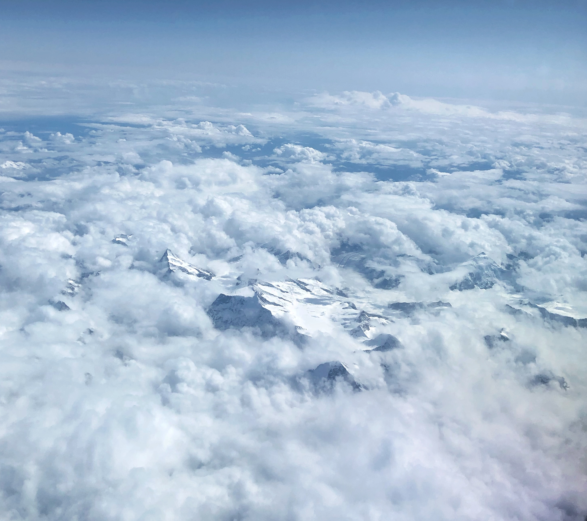
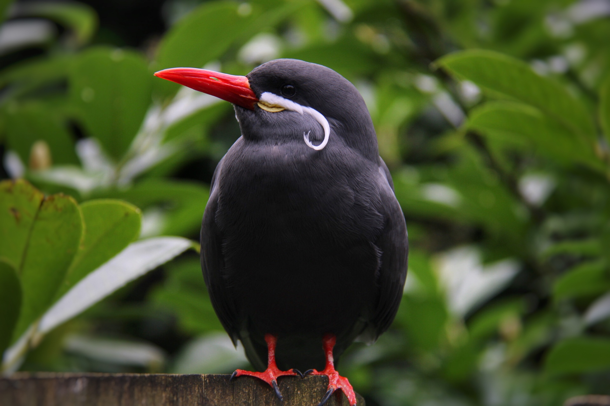
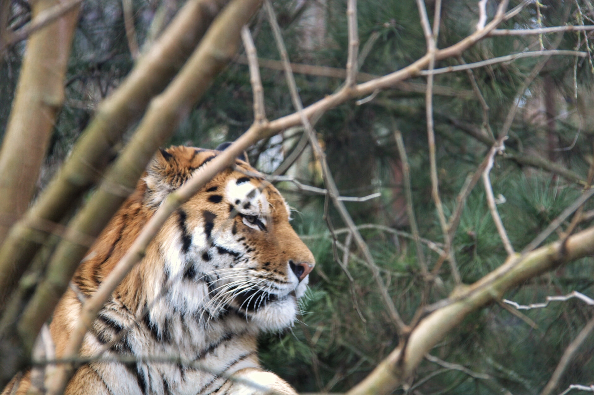
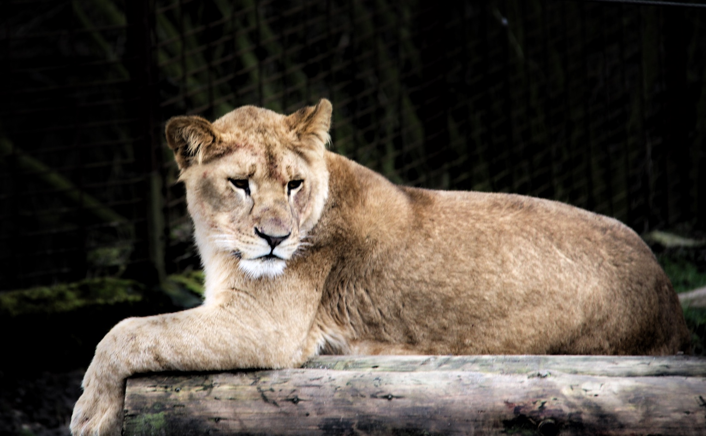
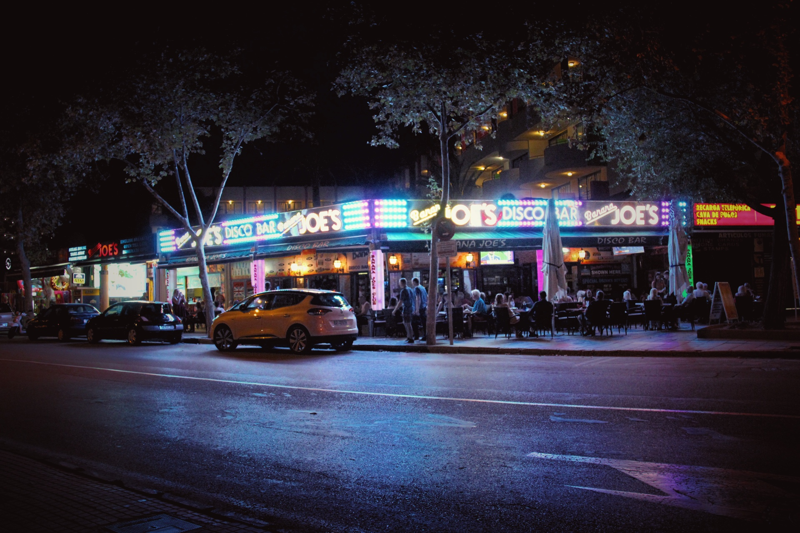
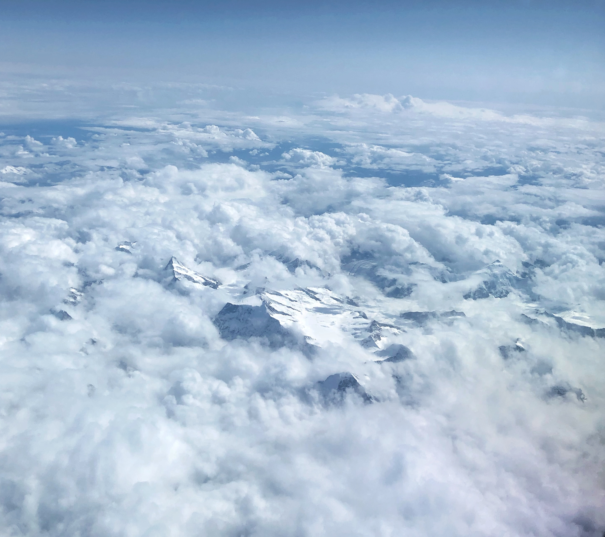
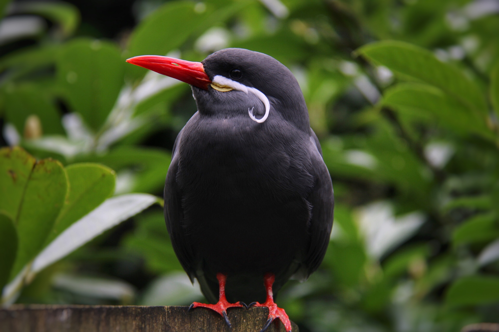
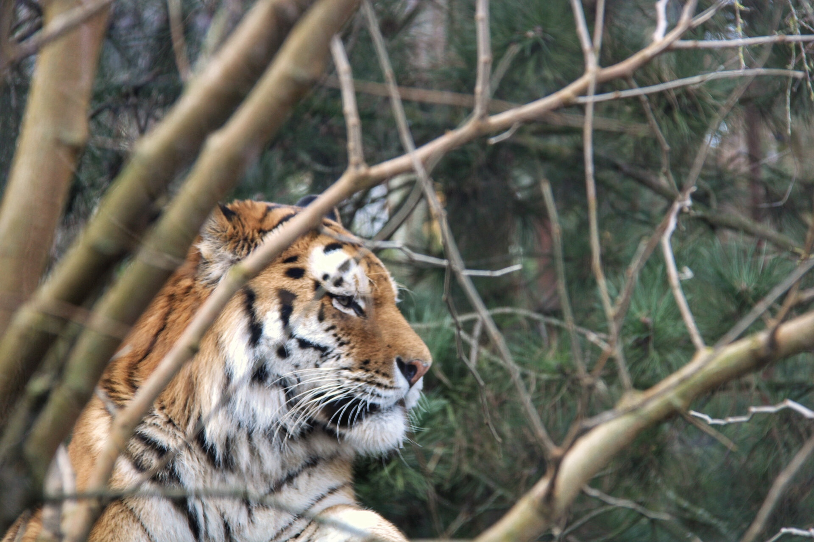
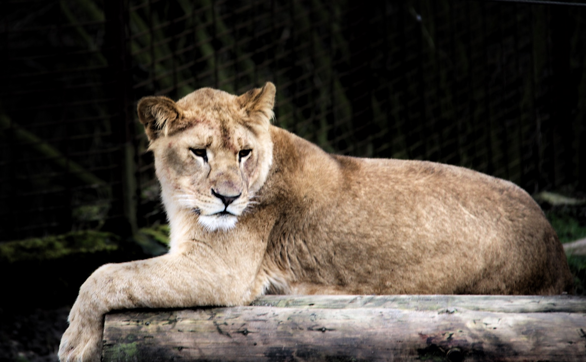
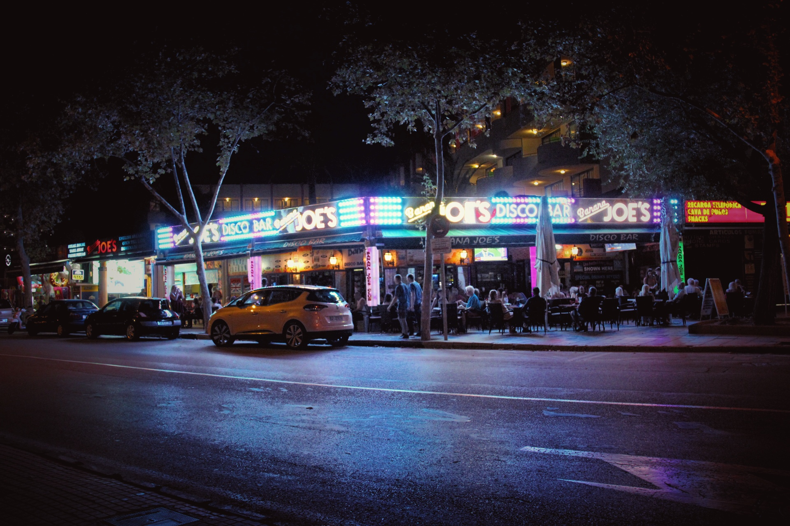

Christoffer Grønlund Svendsen
Egne fotografier
Billeder
Nedenunder kan man se en række billeder der udelukkende er taget af egen interesse. Det er både billeder fra Spanien, Frankrig, Danmark og zoologisk have. Jeg har gennem en længere periode taget nogle billeder og redigeret dem og nedenunder kan man se et udpluk af nogle af dem.
 








